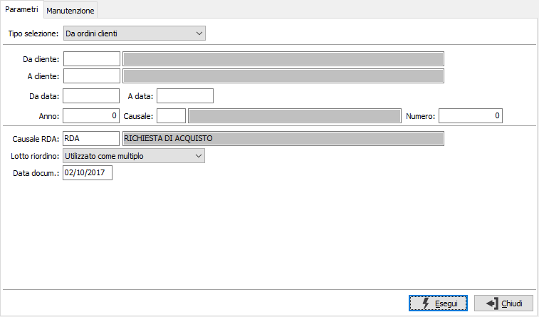
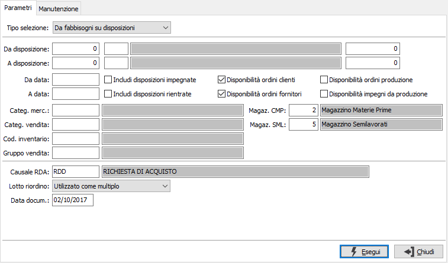

Generazione richieste di acquisto
La procedura consente di generare i documenti di richieste di acquisto partendo dagli ordini clienti, dai fabbisogni derivanti dalle disposizioni di produzione oppure dalle MRP. Ogni opzione di generazione è utilizzabile solo in presenza del relativo modulo. La generazione si compone di due fasi; la prima di selezione dei documenti da cui effettuare la generazione attraverso una serie di criteri e la seconda di manutenzione della richiesta elaborata per ulteriori modifiche. Per la fase di manutenzione si rimanda al capitolo relativo alla gestione delle richieste di acquisto.
Selezione documenti
La richiesta parametri si diversifica a seconda che si utilizzi la generazione da ordini clienti oppure la generazione da fabbisogni su disposizioni; il campo tipo selezione determina il tipo di selezione dei dati per la generazione delle richieste di acquisto. Se non sono presenti i moduli necessari al funzionamento della procedura, questo sarà segnalato e non sarà possibile utilizzarla. La scelta del tipo selezione sarà limitata ai soli moduli presenti (ordini e produzione light).
Se presente il modulo di produzione sarà presente la casella Escludi prodotti con scheda tecnica, spuntata, per escludere le righe ordini di detti articoli dalla generazione.

DA CLIENTE: eventuale codice del cliente, presente in anagrafica clienti, da cui si vuole iniziare la selezione. Confermando a vuoto, la selezione inizia dal primo cliente valido. Sul campo sono attive le funzioni di ricerca (F9).
A CLIENTE: eventuale codice del cliente, presente in anagrafica clienti, con cui si vuole terminare la selezione. Confermando a vuoto, la selezione termina con l’ultimo cliente valido. Sul campo sono attive le funzioni di ricerca (F9).
DA DATA: eventuale data da cui deve iniziare l’analisi dei documenti relativamente ai precedenti parametri di selezione. Confermando a vuoto, l’analisi inizia con il primo documento valido.
A DATA: eventuale data con cui si desidera terminare l’analisi dei documenti relativamente ai precedenti parametri di selezione. Confermando a vuoto, l’analisi si conclude con l'ultimo documento valido.
ANNO: indica l'anno degli ordini a cui si vuole limitare la selezione.
CAUSALE: eventuale codice della Causale ordini a cui si vuole limitare la selezione. Sul campo sono attive le funzioni di ricerca (F9).
NUMERO: indica il numero dell'ordine a cui si vuole limitare la selezione, in combinazione con anno e/o causale.
CAUSALE RDA: codice della causale con cui sarà generata la richiesta di acquisto, la causale deve essere abilitata alla generazione da ordini fornitori e l'utente deve esserne abilitato all'uso. Sul campo sono attive le funzioni di ricerca (F9).
LOTTO DI RIORDINO: definisce come gestire la quantità in relazione al lotto di riordino del prodotto:
utilizzato come minimo: la quantità non sarà mai inferiore al lotto di riordino se diverso da zero;
utilizzato come multiplo: la quantità sarà calcolata sempre come multiplo (arrotondata per eccesso) del lotto di riordino se diverso da zero;
non utilizzato: non sarà mai utilizzato il lotto di riordino, né come minimo né come multiplo.
DATA DOCUMENTO: definisce la data da assegnare alla richiesta che sarà generata.
Generazione da fabbisogni su disposizioni

DA DISPOSIZIONE: tre campi per contenere rispettivamente anno, causale e numero della disposizione da cui si vuole iniziare la selezione. Confermando a vuoto, la selezione inizia dalla prima disposizione compatibile con i successivi parametri.
A DISPOSIZIONE: tre campi per contenere rispettivamente anno, causale e numero della disposizione con cui si vuole concludere la selezione. Confermando a vuoto, la selezione termina con l’ultima disposizione compatibile con i successivi parametri.
DA DATA: data disposizione da cui si vuole iniziare la selezione. Confermando a vuoto, la selezione inizia dalla prima data valida.
A DATA: data disposizione con cui si vuole concludere la selezione. Confermando a vuoto, la selezione termina con l'ultima data valida.
INCLUDI DISPOSIZIONI IMPEGNATE: definisce se considerare anche le disposizioni che sono già impegnate (casella con segno di spunta).
INCLUDI DISPOSIZIONI RIENTRATE: definisce se considerare anche le disposizioni che sono già rientrate (casella con segno di spunta).
DISPONIBILITÀ ORDINI CLIENTI: determina l'aggiunta al calcolo della disponibilità di magazzino dell'impegno derivante dagli ordini clienti (casella con segno di spunta). Viene proposto quanto come indicato nella configurazione produzione.
DISPONIBILITÀ ORDINI FORNITORI: determina l'aggiunta al calcolo della disponibilità di magazzino dell'ordinato derivante dagli ordini fornitori (casella con segno di spunta). Viene proposto quanto come indicato nella configurazione produzione.
DISPONIBILITÀ ORDINI PRODUZIONE: determina l'aggiunta al calcolo della disponibilità di magazzino dell'ordinato derivante dalla produzione (casella con segno di spunta).
DISPONIBILITÀ IMPEGNI DA PRODUZIONE: determina l'aggiunta al calcolo della disponibilità di magazzino dell'impegno derivante dalla produzione (casella con segno di spunta).
CATEGORIA MERCEOLOGICA: eventuale codice della categoria merceologica, riferita ai prodotti, per cui effettuare la selezione. Sul campo sono attive le funzioni di ricerca (F9).
CATEGORIA DI VENDITA: eventuale codice della categoria di vendita, riferita ai prodotti, per cui effettuare la selezione. Sul campo sono attive le funzioni di ricerca (F9).
CODICE INVENTARIO: eventuale codice inventario, riferito ai prodotti, per cui effettuare la selezione. Sul campo sono attive le funzioni di ricerca (F9).
GRUPPO VENDITA: eventuale codice del gruppo vendita, riferito ai prodotti, per cui effettuare la selezione. Sul campo sono attive le funzioni di ricerca (F9).
MAGAZZINO COMPONENTI: codice del magazzino da utilizzare per i progressivi delle materie prime. Sul campo sono attive le funzioni di ricerca (F9) sulla tabella magazzini. Viene proposto quello riportato in configurazione produzione.
MAGAZZINO SEMILAVORATI: codice del magazzino da utilizzare per i progressivi dei semilavorati. Sul campo sono attive le funzioni di ricerca (F9) sulla tabella magazzini. Viene proposto, se attiva la gestione, quello riportato in configurazione produzione.
CAUSALE RDA: codice della causale con cui sarà generata la richiesta di acquisto, la causale deve essere abilitata alla generazione da disposizioni e l'utente deve esserne abilitato all'uso. Sul campo sono attive le funzioni di ricerca (F9).
LOTTO DI RIORDINO: definisce come gestire la quantità in relazione al lotto di riordino del prodotto:
utilizzato come minimo: la quantità non sarà mai inferiore al lotto di riordino se diverso da zero;
utilizzato come multiplo: la quantità sarà calcolata sempre come multiplo (arrotondata per eccesso) del lotto di riordino se diverso da zero;
non utilizzato: non sarà mai utilizzato il lotto di riordino, né come minimo né come multiplo.
DATA DOCUMENTO: definisce la data da assegnare alla richiesta che sarà generata.